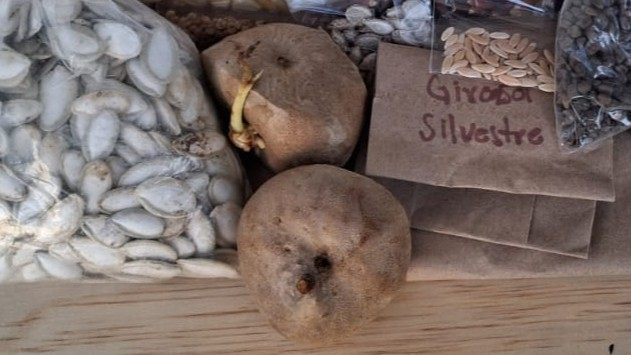
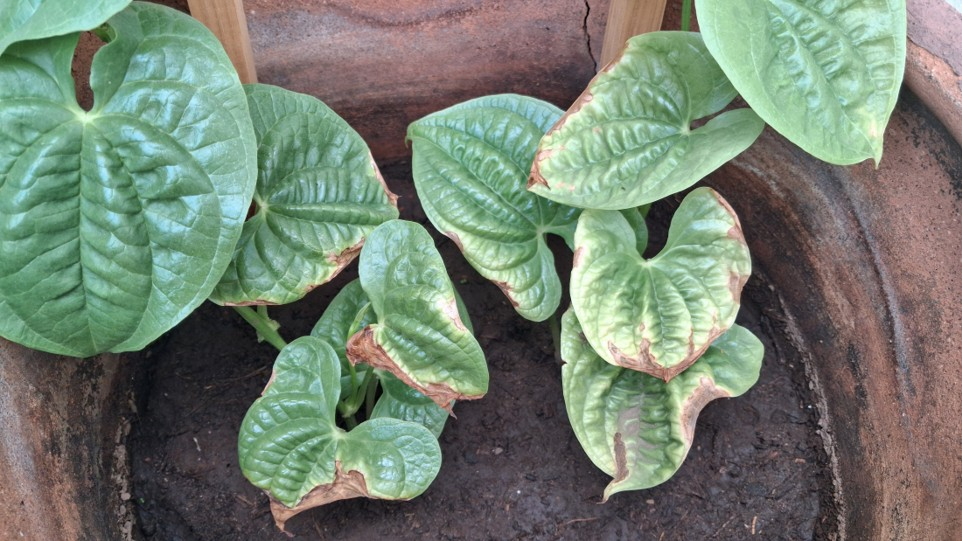
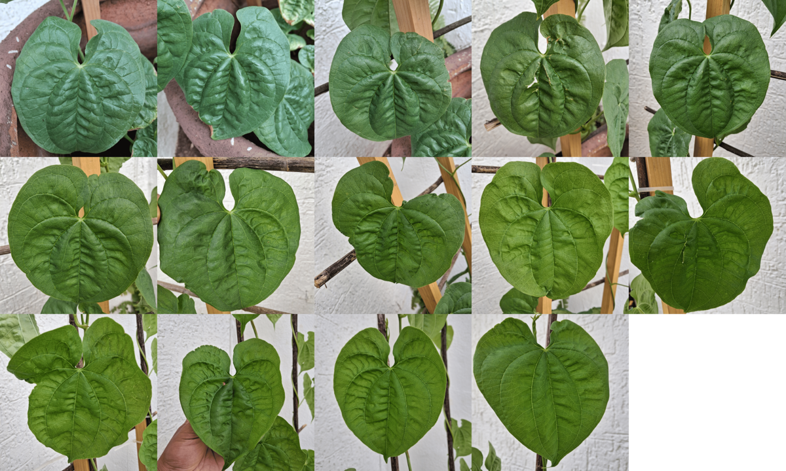
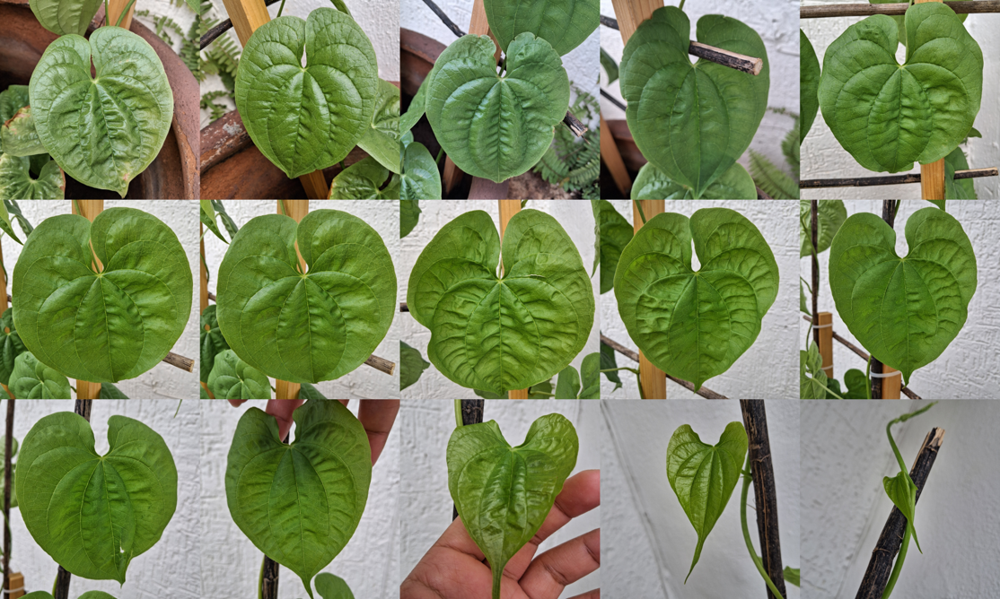
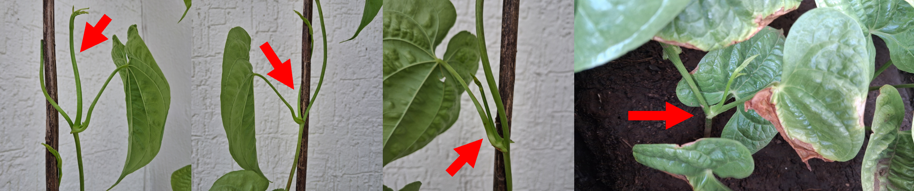
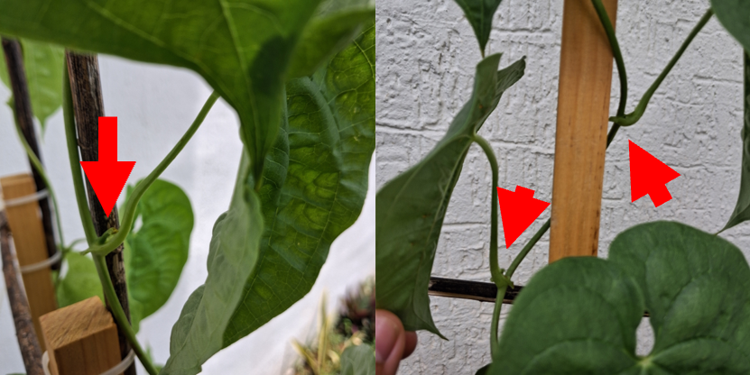
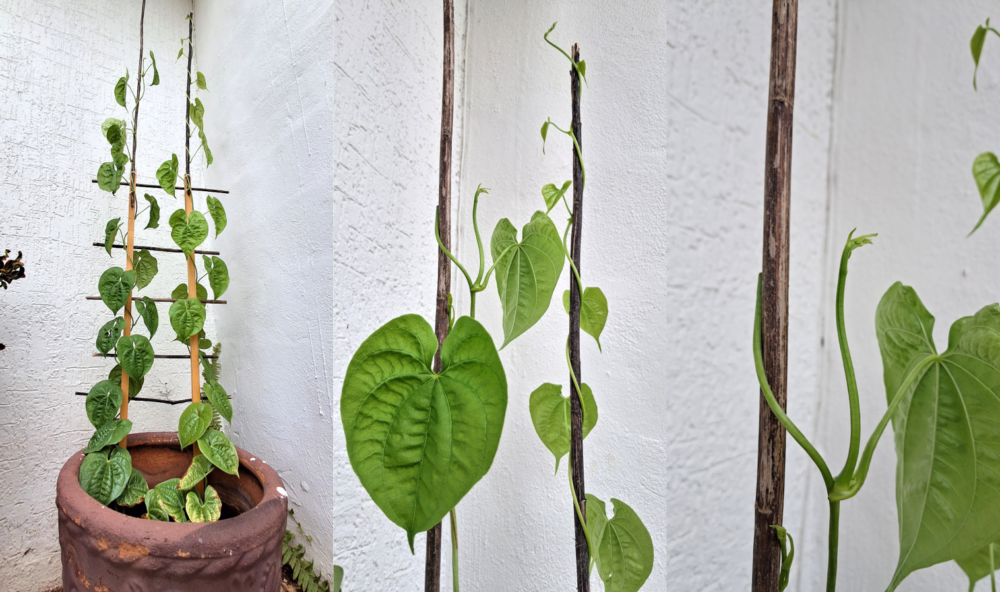

Para quienes lo desconocen (así como yo), existe una variedad de papa que podríamos considerar como local de Yucatán, y resulta que es una enredadera. Son papas de entre 5 y 7 cm.
En esta entrada vamos a aprender sobre el proceso de cultivar esta papa, información muy útil para tu huerto, o para personas como yo, que estaban comenzando en las bellas artes del trabajo con la tierra.

Primeros cuidados
La papa así como se ve en la imagen, se toma y se puede poner en tierra negra, sembrándola con unos 4 o 5 cm de tierra encima de ella, es posible emplear una cubeta, a partir de ahí puede ser regada cada día o con intermitencias según las lluvias, observa que la tierra en su superficie parezca húmeda y no totalmente seca. Las papas germinan en un periodo entre 15 y 21 días (2-3 semamas), la germinación más rápida se produjo con la papa que ya tenía unas raíces crecientes. Para este punto es recomendable ya tener un tutor, este tutor puede ser un palo de madera por el cual la planta pueda irse enredando, si se utiliza una malla los huecos deben ser amplios; sobre el mismo palo de madera la enredadera se puede extender hasta 2 m de longitud después de dos meses.

Inicialmente la papá crecía expuesta al sol, y así germinó, pero en un periodo iniciando las temperaturas más altas también (más de 35°C) sus primeras hojas comenzaron a quemarse, por lo tanto se recomienda que la papa sea protegida poniéndola a la sombra, con un breve tiempo de exposición al sol, entre unas 2 y 3 hrs (no todo el día).

Contemplando la planta en el periodo vegetativo/iniciación
La hojas pueden tener una longitud entre 7 y 15 cm, son hojas amplias, con forma de corazón. Atraviesan una variedad de colores verdes, comenzando por un tono amarillento claro, evolucionan hacia un verde claro suave, y las hojas más viejas se colorean de un verde oscuro. En las imágenes se pueden ver los tonos de varias de las hojas (excepto de las quemadas), yendo desde la base, hasta la punta.


Dado que era desconocido el crecimiento de la planta, más tarde se requirió extender el tutor, fue necesario acomodar la enredadera, en un proceso descuidado, el extremo final de la primera planta sembrada se rompió, deteniendo el crecimiento de esta, después de unos días, otros tallos comenzaron a surgir de la unión en el tallo principal y el de las hojas. Después de observas las hojas, puede reconocerse que la planta ya estaba preparada para este crecimiento, pues las estructuras pueden identificarse en todas las hojas, pero aún sin crecer, en este caso ya hay por lo menos 3 tallos creciendo.


Seguimos en la espera ...
El crecimiento de la planta continua, y esperamos con ansias la floración, en tanto llegue ese momento esta entrada se actualizará, mientras tanto, seguimos regando, y contemplando a esta bella y generosa planta.

Gracias por leer, cuidemos nuestra casa común .